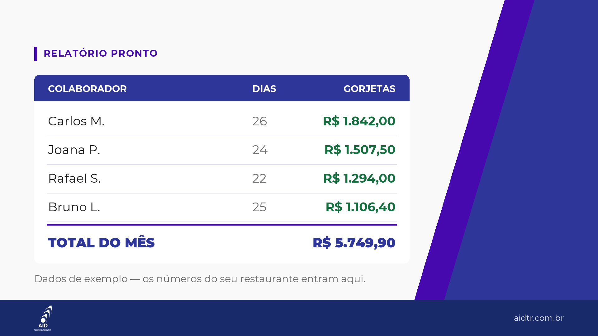

Registra a gorjeta por pessoa, turno e dia.
Cada lançamento tem quem, quando e quanto. Nada fica na cabeça de ninguém.
Controle de gorjetas
Registre por colaborador, por turno e por dia. O relatório sai pronto — e você tem a comprovação na hora em que precisar.
75 segundos · o sistema rodando de verdade
O problema
Em quase todo restaurante de Franca, a gorjeta é resolvida assim: no papel, na cabeça de alguém, ou numa divisão feita “no dia”.
Funciona. Até o dia em que alguém precisa responder três perguntas simples:
Hoje a resposta quase sempre é “meu contador resolve”. E o contador só consegue resolver se existir um registro pra ele resolver.
O que muda
Cada lançamento tem quem, quando e quanto. Nada fica na cabeça de ninguém.
Quanto cada colaborador recebeu, em quantos dias, e o total do período. Sem planilha montada na mão, sem soma que ninguém confere.
Quando a prestação de contas chegar, o número está lá — separado e conferível.
Demonstração

Colaboradores, turnos e dias. Leva poucos minutos.
A partir das vendas do dia, no celular ou no computador, enquanto a informação ainda está fresca.
Mês fechado, você abre o relatório. Está tudo lá.
Eu mostro o sistema rodando, com a realidade do seu restaurante, direto no seu celular. São dois minutos, sem compromisso e sem instalar nada.
Cadastro da sua equipe, configuração do sistema e treinamento com quem for utilizar. É aqui que está o trabalho.
Hospedagem, suporte e ajustes. Cancele quando quiser.
Condições e formas de pagamento: me pergunte no WhatsApp.
Quero saber as condiçõesDúvidas
Não. O sistema é online — abre no navegador do celular ou do computador.
Funciona. Mas o uso é administrativo: a partir das vendas, o sistema calcula e distribui a gorjeta entre os colaboradores, e ainda acompanha faltas e atestados. Quem opera é você ou quem cuida do administrativo — o colaborador não lança nada.
Não. O sistema é do administrativo. Se você quiser que o colaborador consulte o que recebeu, dá — mas exige um ajuste à parte, e a gente combina isso antes.
Suporte por WhatsApp.
Dá. É só pedir a demonstração — eu mostro com a realidade do seu restaurante, não com tela de exemplo.